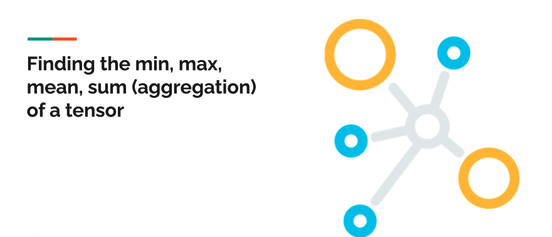

import tensorflow as tf
import numpy as npThis blog, I just a basic commparison of math operations between numpy and tensor variables.
This is a good learning for me as almost all commands are similar to that of numpy.


0. Loading Libraries
tf.__version__'2.15.0'tf.config.list_physical_devices('GPU')[PhysicalDevice(name='/physical_device:GPU:0', device_type='GPU')]1. Defining variables
var = tf.constant([[30,40,50],[45,65,70]])
var1 = np.array([[30,40,50],[45,65,70]])
print(var)
print(" ")
print(var1)tf.Tensor(
[[30 40 50]
[45 65 70]], shape=(2, 3), dtype=int32)
[[30 40 50]
[45 65 70]]2. Math Operations
2.1. Absolute
print(var * -1 )
print(" ")
print(var1 * -1 )tf.Tensor(
[[-30 -40 -50]
[-45 -65 -70]], shape=(2, 3), dtype=int32)
[[-30 -40 -50]
[-45 -65 -70]]print(tf.math.abs(var * -1))
print("")
print(np.abs(var1 * -1))tf.Tensor(
[[30 40 50]
[45 65 70]], shape=(2, 3), dtype=int32)
[[30 40 50]
[45 65 70]]Here we can see both the outputs and commands are very similar to that of numpy
2.2. Argmax/Argmin
print(tf.math.argmax(var))
print("")
print(np.argmax(var1))tf.Tensor([1 1 1], shape=(3,), dtype=int64)
5This is the only difference we can see where tensorflow by default considers as axis=0 while numpy takes all numbers
print(tf.math.argmax(var,axis=0))
print("")
print(np.argmax(var1,axis=0))tf.Tensor([1 1 1], shape=(3,), dtype=int64)
[1 1 1]print(tf.math.argmax(var,axis=1))
print("")
print(np.argmax(var1,axis=1))tf.Tensor([2 2], shape=(2,), dtype=int64)
[2 2]2.3. Maximum or Minumum
print(tf.math.reduce_max(var))
print("")
print(np.max(var1))tf.Tensor(70, shape=(), dtype=int32)
70print(tf.math.reduce_max(var,axis = 0))
print("")
print(np.max(var1,axis = 0))tf.Tensor([45 65 70], shape=(3,), dtype=int32)
[45 65 70]print(tf.math.reduce_max(var,axis = 1))
print("")
print(np.max(var1,axis = 1))tf.Tensor([50 70], shape=(2,), dtype=int32)
[50 70]2.4. Sum
print(tf.math.reduce_sum(var))
print("")
print(np.sum(var1))tf.Tensor(300, shape=(), dtype=int32)
300print(tf.math.reduce_sum(var,axis=0))
print("")
print(np.sum(var1,axis=0))tf.Tensor([ 75 105 120], shape=(3,), dtype=int32)
[ 75 105 120]2.5. Power
print(tf.math.pow(var,2))
print("")
print(np.power(var1,2))
print("")
print(var ** 2)
print("")
print(var1 ** 2)tf.Tensor(
[[ 900 1600 2500]
[2025 4225 4900]], shape=(2, 3), dtype=int32)
[[ 900 1600 2500]
[2025 4225 4900]]
tf.Tensor(
[[ 900 1600 2500]
[2025 4225 4900]], shape=(2, 3), dtype=int32)
[[ 900 1600 2500]
[2025 4225 4900]]2.6. Log
var = tf.cast(var, tf.float32)
print(tf.math.log(var))
print("")
print(np.log(var1))tf.Tensor(
[[3.4011974 3.6888795 3.912023 ]
[3.8066626 4.1743875 4.248495 ]], shape=(2, 3), dtype=float32)
[[3.40119738 3.68887945 3.91202301]
[3.80666249 4.17438727 4.24849524]]2.7. Exponential
var = tf.cast(var, tf.float32)
print(tf.math.exp(var))
print("")
print(np.exp(var1))tf.Tensor(
[[1.0686474e+13 2.3538525e+17 5.1847055e+21]
[3.4934271e+19 1.6948892e+28 2.5154387e+30]], shape=(2, 3), dtype=float32)
[[1.06864746e+13 2.35385267e+17 5.18470553e+21]
[3.49342711e+19 1.69488924e+28 2.51543867e+30]]2.8. Squareroot
print(tf.math.sqrt(var))
print("")
print(np.sqrt(var1))tf.Tensor(
[[5.4772253 6.3245554 7.071068 ]
[6.708204 8.062258 8.3666 ]], shape=(2, 3), dtype=float32)
[[5.47722558 6.32455532 7.07106781]
[6.70820393 8.06225775 8.36660027]]